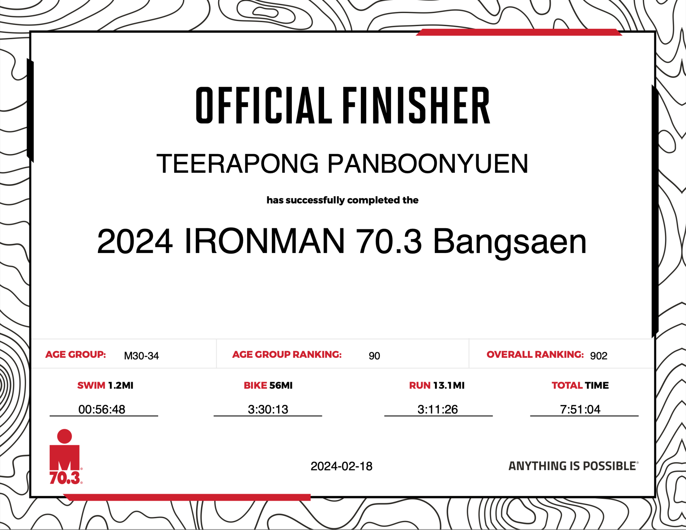
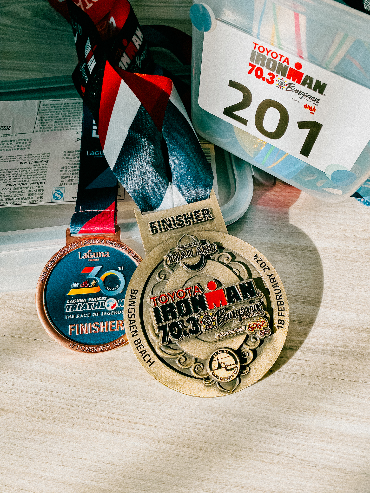

The Day I Became an IRONMAN: Conquering 113KM of the Limits of Pain and Human Endurance
 Becoming an IRONMAN at the 2024 IRONMAN 70.3 Bangsaen.
Becoming an IRONMAN at the 2024 IRONMAN 70.3 Bangsaen.
Reflecting on the extraordinary journey to becoming an IRONMAN fills me with immense pride. This pivotal moment, the culmination of months of unwavering dedication and resilience, stands as a true testament to the power of mind and body.

Swim 2.4 miles.
— IRONMAN Triathlon (@IRONMANtri) August 24, 2019
Bike 112 miles.
Run 26.2 miles.
Brag for the rest of your life.#AnythingIsPossible pic.twitter.com/qnjX29bvdN
The Starting Line
As I stood at the starting point of the 2024 IRONMAN 70.3 Bangsaen in Thailand, surrounded by breathtaking coastal scenery, a wave of anticipation and apprehension washed over me. The challenge ahead was daunting, yet exhilarating.
The Race Breakdown
The triathlon comprised three grueling segments:
- üèä‚Äç‚ôÇÔ∏è 1.9km (1.2-mile) swim to kick off the journey.
- üö¥‚Äç‚ôÇÔ∏è 90km (56-mile) bike ride through scenic routes.
- üèÉ‚Äç‚ôÇÔ∏è 21.1km (13.1-mile) run that pushed me to my absolute limits.


Together, these segments totaled an astounding 113km (70.3 miles) of relentless determination.


The Journey
The road to IRONMAN 70.3 Bangsaen was filled with challenges. Each stroke, pedal, and stride pushed me beyond my comfort zone. Moments of doubt and exhaustion tested my resolve, yet each obstacle revealed a reservoir of inner strength I never knew existed.


The unwavering support of the event staff and my fellow athletes played a pivotal role. Their encouragement and camaraderie fueled my determination and reminded me I wasn’t alone on this journey.
The Finish Line
Crossing the finish line after 7.51 hours was a moment of indescribable joy, relief, and pride. Just moments before the 8.30-hour cutoff, I officially earned the title of IRONMAN 70.3 finisher. It wasn’t just about completing a race; it was about embracing the challenges and pushing beyond my perceived limits.

Gear and Conditions
Equipped with my MERIDA SCULTURA bike and NIKE Zoom Fly 5 shoes, I faced the scorching midday sun, which intensified the already demanding race. Despite the fatigue and heat, sheer determination propelled me forward.
Gratitude
This achievement would not have been possible without the tireless efforts of the IM70.3 Bangsaen organizers and staff. Their support made this dream a reality, and I am deeply grateful.

Lessons Learned
Becoming an IRONMAN wasn’t just a physical feat—it was a testament to perseverance and the resilience of the human spirit. Through this journey, I’ve learned that true strength is discovered in the face of adversity.
To anyone pursuing a seemingly insurmountable dream, believe in yourself and embrace the challenges. It is through perseverance and determination that dreams transform into reality.

The Celebration
After crossing the finish line, I rewarded myself with a well-deserved feast of Japanese food and sushi—a delicious acknowledgment of the physical and mental endurance the race demanded.
Final Thoughts
The happiness I find in this journey lies not just in the end goal but in the process itself—the struggles, triumphs, and growth along the way. To anyone considering a challenging path, embrace it wholeheartedly. Trust in the transformative power of hard work and dedication. In the pursuit of excellence, we find joy and fulfillment that words cannot capture.
With immense gratitude and pride, I declare: I am an IRONMAN.
PS. The year began with completing the IM70.3 and ended with crossing the finish line at the Laguna Triathlon in Phuket, which included a 1.8K swim, a 55K bike ride, and a 12K run. Truly, it was a year defined by triathlons for me.
As I reflect on this experience, I feel immense gratitude—for the beauty of Phuket, the camaraderie of my fellow athletes, and the personal growth this race has inspired. The Laguna Phuket Triathlon is more than just an event; it’s a celebration of human spirit and perseverance.
To anyone considering a triathlon, my advice is simple: go for it. Embrace the challenge, trust your training, and don’t forget to enjoy the ride. Whether you’re a seasoned athlete or a first-timer like me, the journey will leave you stronger, wiser, and more fulfilled.
Until next time, Kao



#IRONMAN703 #IRONMAN #IRONMANtri #Triathlon #AnythingIsPossible
Citation
Panboonyuen, Teerapong. (Feb 2024). The Day I Became an IRONMAN. Blog post on Kao Panboonyuen. https://kaopanboonyuen.github.io/blog/2024-02-21-the-day-I-became-an-IRONMAN/
For a BibTeX citation:
@article{panboonyuen2024ironman,
title = "The Day I Became an IRONMAN",
author = "Panboonyuen, Teerapong",
journal = "kaopanboonyuen.github.io/",
year = "2024",
month = "Feb",
url = "https://kaopanboonyuen.github.io/blog/2024-02-21-the-day-I-became-an-IRONMAN/"}